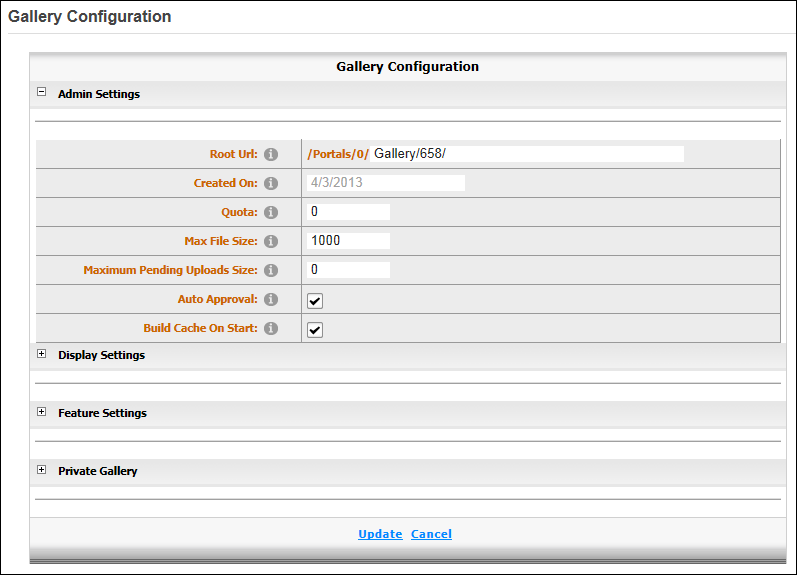

Configuring Admin Settings
How to configure the administrative settings of the Gallery module including file upload size, available categories, themes and auto approval. Restricted to Administrators only.
- Select
 Edit >
Edit >  Configuration from the Gallery module actions menu. This displays the Gallery Configuration page with the Admin Settings section expanded.
Configuration from the Gallery module actions menu. This displays the Gallery Configuration page with the Admin Settings section expanded.
- In the Root URL text box, edit the location where files are stored. Note: the specified Root URL will always be relative to the current site home directory. E.g. Portals/site/. Therefore, it is not possible to share media across multiple sites.
- At Created On, you can view the date this gallery was created.
- In the Quota text box, enter the maximum number of space available in kilobytes (kb) for all files in this gallery. The default is set to 0 which is no limit, however it is recommended that a limit be set.
- In the Max File Size text box, enter the maximum size in kilobytes (kb) for individual files being uploaded to the gallery. If files exceed this limit the user will be warned and the upload will fail. The default setting is 1000.
- In the Maximum Pending Uploads Size text box, enter the maximum size in kilobytes (kb) that files pending upload can grow to before they are committed to storage. The default setting is 0 (zero) which means no limitation. A maximum of 20000 kb or about 20 Mb is permitted.
- At Auto Approval, to automatically approve uploaded files - OR - to require files to be approved by a module administrator.
- At Build Cache On Start, to cache file and module configuration data and enhance performance (recommended) - OR - to remove caching.
-
Click the Update button.

Admin Settings for the Gallery module